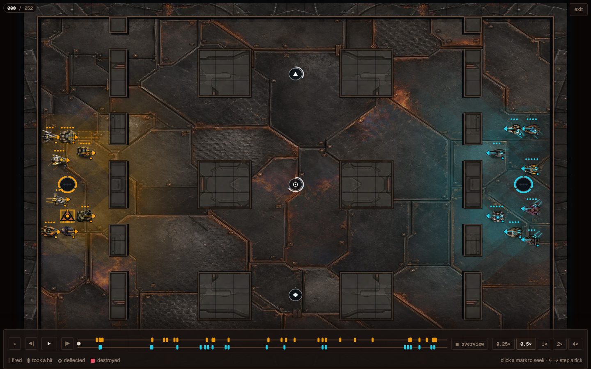
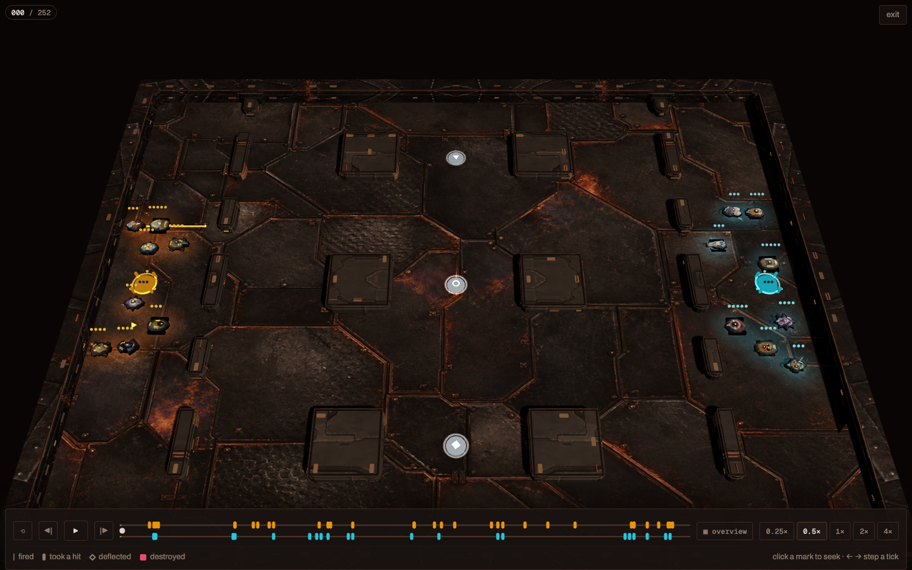
| Class | Canonical Canvas2D | Authored WebGL |
|---|---|---|
| Kestrel | 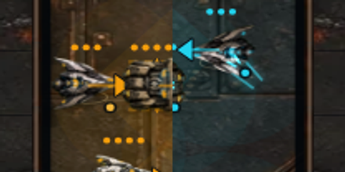 |
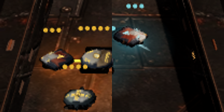 |
| Palisade | 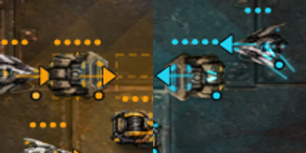 |
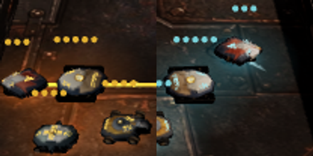 |
| Towline | 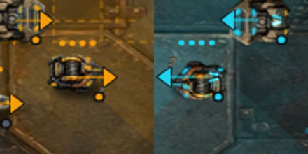 |
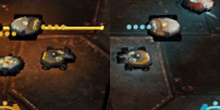 |
| Patchbay | 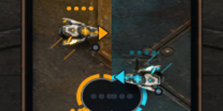 |
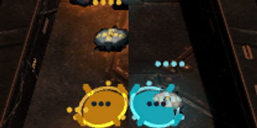 |
| Lantern | 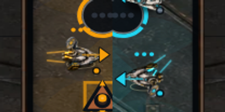 |
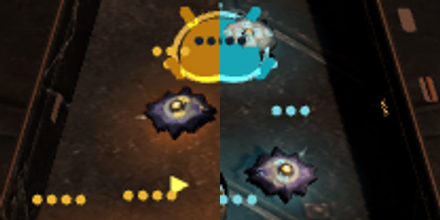 |
| Mortar | 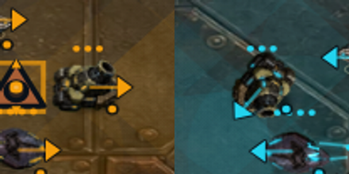 |
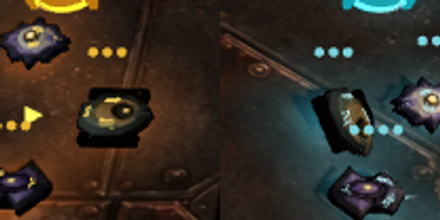 |
| Minesmith | 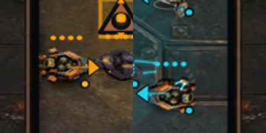 |
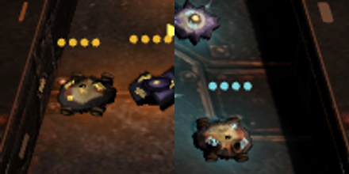 |
| Hush | 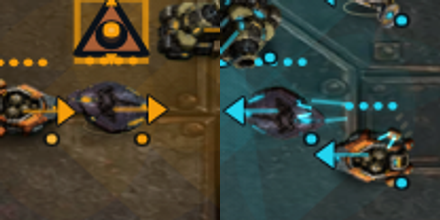 |
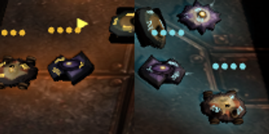 |
| Relay | 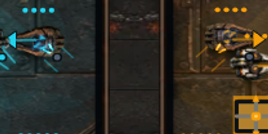 |
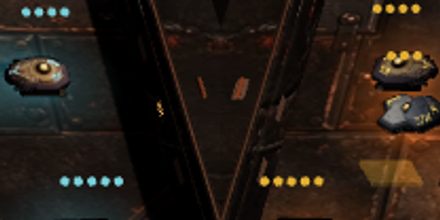 |
| Switchback | 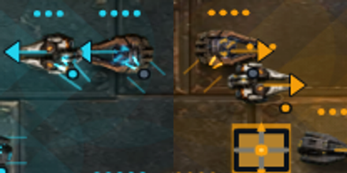 |
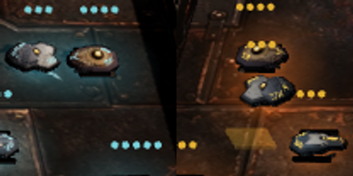 |
| Longshot | 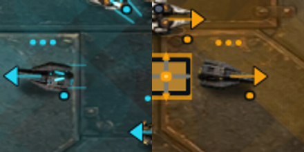 |
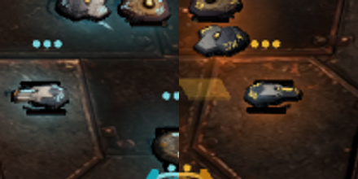 |
| Mason | 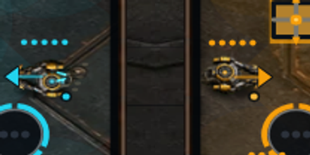 |
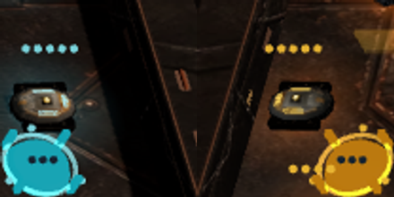 |
| Sunder | 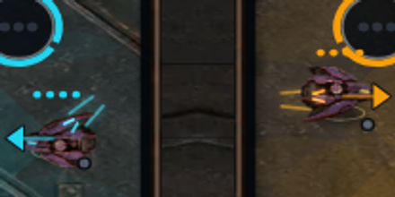 |
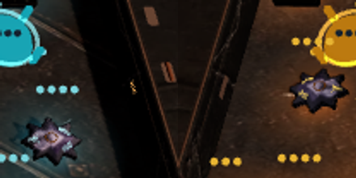 |
| Repulsor | 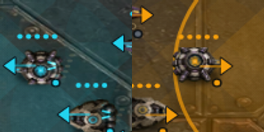 |
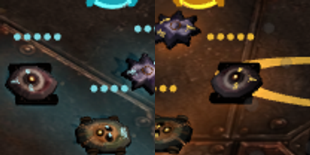 |
| Veil | 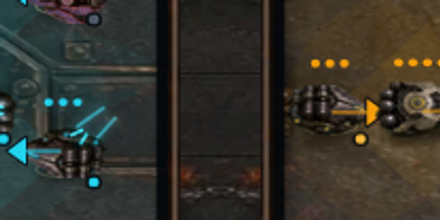 |
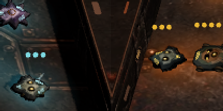 |
| Nest | 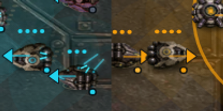 |
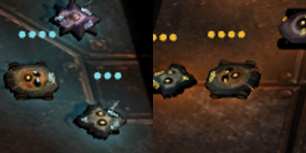 |